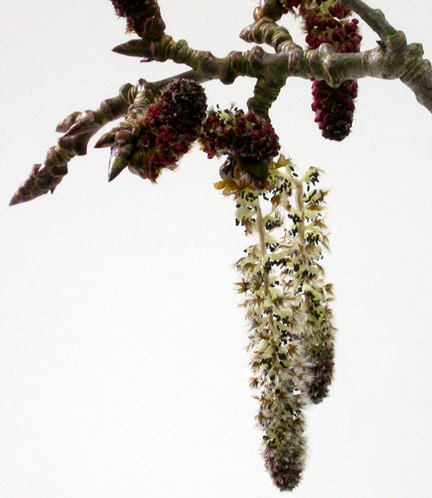

Epiphyte diversity on Scottish aspen (Populus tremula)
A component of the extended phenotype

Preface
From 2007 to 2011 I carried out original research into the community genetics of aspen (Populus tremula) in various parts of Scotland. It has been my intention to open this thesis up to the wider world by publishing in an accessible format so that others may make use of the information.
The thesis is available as a PDF document via the University of Edinburgh digital research archive here: Edinburgh Research Archive
My professional background in in horticulture, attending Broomfield College in Derbyshire for a National Diploma in Horticulture, after which I worked at the Jerusalem Botanical Garden in Israel and in private estate gardens.
I then gained a Higher National Diploma in Horticulture with Plantsmanship from the Scottish Agricultural College (now SRUC) and the Royal Botanic Garden Edinburgh - a fantastic experience learning from incredibly knowledgeable and experienced horticulturists and botanists. Having discovered that I really enjoyed the botanical and taxonomic aspects of horticulture, I gained a BSc (Hons) Botany from Reading University, and spent my dissertation summer measuring Carpobrotus spp. on the Bournemouth-Southbourne coast (which may be another Bookdown project!).
After working very hard, I was accepted onto the MSc Biodiversity and Taxonomy of Plants with the University of Edinburgh and Royal Botanic Garden Edinburgh (graciously funded by NERC), and spent the following year continuing my thesis research into the phylogenetics of Prunus laurocerasus and its allies from Europe and Central Asia.
I started my PhD (funded by BBSRC) and the topic of this book in 2007 - a joint supervisory effort between the University of Edinburgh (Dr Richard Ennos), the Royal Botanic Garden Edinburgh (Dr Chris Ellis), and the James Hutton Institute (Dr Glenn Iason). I was fortunate to have such an excellent team of supervisors. Special mention to Dr Richard Milne (University of Edinburgh) who took on the role of ‘pastoral supervisor’ and provided many hours of light relief with Scrabble games and tea.
The content presented here is a distilled version of the thesis that exists in the archive, with some additional analyses from biomass samples that have been air-drying for at least 10 years as I did not have time to work on them during my PhD.
Even though it has been many years since I did this work, I still have a profound love for aspen and their epiphyte communities. I was privileged to have been given this opportunity, and spent considerable time out in the field collecting data, samples, and identifying the lichen flora of different aspen clones and communities. To this day I feel a deep connection to the land I walked on and the woodlands I worked in. It was a real labour of love, despite the blood (from climbing too many fences), sweat and copious tears.
Now the official bit:
Thesis submitted for the examination of:
Doctor of Philosophy
Institute of Evolutionary Biology
School of Biological Sciences
University of Edinburgh
&
Royal Botanic Garden Edinburgh
&
The James Hutton Institute, Aberdeen
Declaration:
I hereby declare that the work contained in this thesis is my own, unless otherwise acknowledged and cited. This thesis has not in whole or part been previously presented for any degree.
Chantel Davies
Edinburgh
August 26, 2011